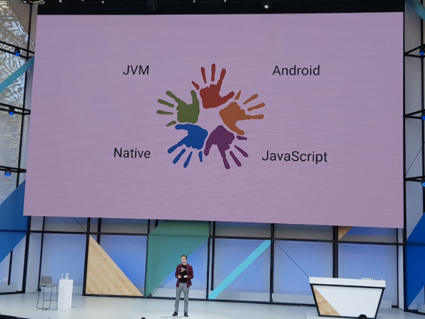

Google I/O - Android
Publicado em:
@davidrobert
A principal novidade sobre a plataforma Android foi o suporte à linguagem de programação Kotlin.

- https://android-developers.googleblog.com/2017/05/android-announces-support-for-kotlin.html
- https://kotlinlang.org/
- Introduction to Kotlin (Google I/O '17) https://www.youtube.com/watch?v=X1RVYt2QKQE
O suporte oficial à linguagem Kotlin está disponível no Android Studio a partir da versão 3.0. Essa versão disponibiliza o suporte nativo da IDE ao Kotlin, com 100% de interoperabilidade com Java (provida pelo compilador do Kotlin) e conversão de código legado (para aqueles que gostam de se aventurar).
Aplicativos como Pinterest, Flipboard e Expedia já migraram para Kotlin.
Além disso, diversas novas APIs e features do Java 8 foram disponibilizadas, como:
java.lang.annotation.RepeatableAnnotatedElement.getAnnotationsByType(Class)java.util.streamjava.lang.FunctionalInterfacejava.lang.reflect.Method.isDefault()java.util.function
Todos com suporte de versão mínima do Android API 24 ou superior. E features como:
- Métodos default e static em interface
- Anotações repetivéis (utilizando @Repeatable)
- Type Annotations
- Method References
- Expressões Lambda
Algumas novas características do Android O:
-
Suporte a fonts via XML (disponível também na support library);
-
TextView com Auto-Sizing;
-
Adaptative icons;
-
findViewById agora retorna uma instancia genérica de classes que estendem View (o famoso Bounded Type);
-
ANDROID_ID será diferente para cada app;
-
Melhorias no gerenciador de dependências;
-
Mudanças nas solicitações sobre locations & scan WIFI pelos apps com objetivo de melhorar o consumo de bateria;
-
Novas restrições a serviços que rodam em background com objetivo de reduzir o consumo de bateria;
-
AlarmManager, SyncAdapter e JobScheduler ainda não possuem limitações nesta versão da API. Mas foi anunciado que provavelmente existirão limitações de uso em versões futuras;
-
SYSTEM_ALERT_WINDOW agora é ordenado de acordo com o app em foreground;
-
Melhorias no APK Analyser: Otimizador de APK com objetivo de diminuir o tamanho dos APKs.
-
Android Vitals
Além disso, foi feito o lançamento do Google Play Protect:
No futuro (ainda está em review), o usuário poderá definir o limite de agressividade do app no consumo de bateria - podendo facilmente pausar serviços em background. Deverão ser incorporados limites para consumo de bluetooth, wifi, etc.
Android Studio
A versão 3.0 do Android Studio recebeu uma série de melhorias:
-
Incorporação de profilers: CPU, Memoria e Rede;
- Com o Network Profiler é possível analisar e investigar cada request individualmente;
- Com o Memory Profiler é possível acompanhar a alocação de memória feita pelo app ao longo do tempo, facilitando a identificação de pontos de alto consumo de memória ou mesmo leaks de memória. Esse profiler com certeza ajudará os desenvolvedores a implementarem melhores apps;
-
Melhoria significativa no tempo de build do app;
-
Android Debug APK;
-
Google Play Store está disponível na imagem do Android O.
-
https://android-developers.googleblog.com/2017/05/android-studio-3-0-canary1.html
-
Android Studio 3.0 Canary 1 https://www.youtube.com/watch?v=rHiA66zUv8c
-
Developer Keynote (Google I/O '17) https://www.youtube.com/watch?v=EtQ8Le8-zyo
Notificações no Android
Ocorreram mudanças significativas no modelo de notificações no Android O. Antes de apresentar as mudanças, tanto de comportamento quando de usabilidade, foram apresentados dados e resultados de uma grande pesquisa conduzida pela Google.
- https://android-developers.googleblog.com/2017/05/whats-new-in-android-o-developer.html
- Notifications UX: What's New for Android O (Google I/O '17) https://www.youtube.com/watch?v=vwZi56I0Mi0
O novo modelo de notificações tem como base entender o que é prioridade para o usuário e qual é o melhor momento para ele recebê-las. O principal componente do novo modelo são os channels, que serão utilizados para definir quando e como uma notificação será apresentada para o usuário, baseado em diferentes níveis de prioridade que os channels podem possuir (Min, Low, Default e High).
System notifications settings for an app: O usuário irá poder definir quais notificações deseja continuar recebendo, de determinado aplicativo, e quais serão as prioridades para cada tipo de notificação. Desta maneira, todos os desenvolvedores (ou fornecedor) de aplicativos serão obrigados a implementar suporte a configurações de notificações por channel (ou as notificações serão removidas em uma versão futura).
A apresentação das notificações também será atualizada. Existirá uma hierarquia visual, onde a mais prioritária vai aparecer primeiro e no topo. Notificações poderão aparecer em uma single line se tiverem prioridade inferior às demais.
Caso o usuário tenha muitas notificações pode gerar um "scroll de notificações". Sendo que durante o scroll os ícones dos aplicativos acabam fornecendo uma relevância adicional para notificações.
Outra característica é que notificações poderão ser postergadas de acordo com um ação do usuário. Por exemplo adiar 1 hora. Se for postergado mais do que X vezes as notificações não serão entregues mais.
Do ponto de vista do Firebase/GCM, passam a existir dois níveis de prioridade: High Priority e Normal Priority.
Questões em aberto:
- Notificações poderão ser postergadas de acordo com o contexto (ex.: Android perceber que o usuário está dirigindo e só mostrar a notificação mais tarde)?
- Firebase/GCM receberá a informação de quando uma notificação foi bloqueada/despriorizada?
Instant App
Diversas palestras sobre Instant App foram apresentadas durante o evento e sua adoção foi encorajada durante as sessões. O suporte a Instant App foi oficializado no Android Studio 3.0.
Zillow, CastBox, Twitter e outras empresas apresentaram casos sobre o uso de Instant App.
- https://developer.android.com/topic/instant-apps/index.html
- Building an Android Instant App (Google I/O '17) https://www.youtube.com/watch?v=9Jg1D07NgeI
- Introduction to Android Instant Apps (Google I/O '17) https://www.youtube.com/watch?v=oispNrpGnIY
- Android Instant Apps Best Practices Fireside Chat (Google I/O '17) https://www.youtube.com/watch?v=F42Rbi3WIlA
Melhores Práticas para aplicativos
Fluxos críticos de usabilidade no mobile foram temas explorados no evento. Novas ferramentas como Smart lock, Autofill e Backup/Restore foram apresentadas como soluções em cenários de gerenciamento de logins e pagamentos.
O suporte ao Android Autofill foi incorporado ao Android O e já é usado por algumas empresas (Keeper, LastPass, iPassword, dashlane, etc). O Autofill permite que os usuários economizem tempo preenchendo os formulários, usando o preenchimento automático em seus devices. O Android O torna mais fácil o preenchimento de formulários de cartões de crédito e de contas. Na prática, o Autofill Framework gerencia a comunicação entre o aplicativo e um serviço de preenchimento automático. A recomendação oficial é otimizar os apps para utilizar Autofill.
A utilização do serviço Smart Lock possibilita o gerenciamento pelo Google das credenciais do usuário em diferentes ambientes (site e aplicativo). Esse recurso possibilita que, em diferentes plataformas do mesmo aplicativo, as credenciais do usuário sejam providas de uma forma automática.
Diversos exemplos de empresas que usam Smart Lock:
O Pinterest afirmou que o uso do Smart Lock melhorou significativamente seus apps.
- https://developers.google.com/identity
- https://developers.google.com/identity/smartlock-passwords/android/overview
- https://developers.google.com/android/reference/com/google/android/gms/auth/api/credentials/package-summary
Android Auto Backup
É possível utilizar os serviços de backup e restore sem depender de contas do Google.
- https://developer.android.com/guide/topics/data/autobackup.html
- https://developer.android.com/guide/topics/data/keyvaluebackup.html
Documento com links sobre Autofill, Smart Lock e Auto Backup: